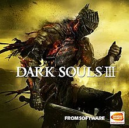

Dark Souls III brengt gamers een prima einde van een prachtige spelserie. De game is, net als zijn voorgangers, flink moeilijk, en juist dat aspect spreekt zo veel gamers wereldwijd enorm aan. S
ommige bosses uit de vorige games zijn legendarisch, en Dark Souls III voegt er zeker een paar memorabele gevechten aan toe. Daar komt bij dat al die actie zich afspeelt in een mooi vormgegeven spelwereld die bol staat van de te ontdekken geheimen. De game brengt een aantal aanpassingen in de gameplay die het
vechten nog net iets leuker maken dan voorheen. Wel valt niet te ontkennen dat Dark Souls III 'simpelweg' voortborduurt op datgene wat de vorige games al deden zonder al te schokkende vernieuwingen te brengen, en het is jammer dat de game kampt met enkele
grafische problemen. Desondanks is Dark Souls III een uitstekende actie-rpg, en zeker een van de beste games ooit gemaakt.
Persoonlijk vind ik dark souls 3 de op een na beste van de serie. De graphics en design zijn zeer goed en de bosses zijn beter dan ooit te voren. Maar dark souls 1
was naar mijn mening beter voor zijn tijd en zal daarom altijd mijn favoriet blijven.
learn more .
